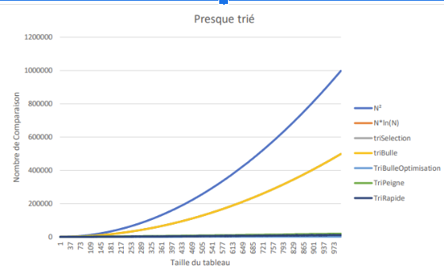

Comparaison de différents algorithmiques de tri
Contexte du projet
Dans le cadre d'un projet de groupe, j'ai été chargé de développer plusieurs algorithmes de tri et de les tester sur des tableaux plus ou moins mélangés pour évaluer leur performance. L'objectif était de comprendre les points forts et les faiblesses de chaque algorithme, car dans des projets réels, les développeurs sont souvent amenés à utiliser des algorithmes de tri. Il est donc crucial de savoir lequel choisir en fonction du contexte et des besoins spécifiques.
-

Image du résultat
Les performances des algorithmes de tri développés ont été évaluées et comparées. Ce graphique illustre les résultats obtenus, permettant ainsi de déterminer l'algorithme le plus adapté en fonction des caractéristiques des données à traiter.
Compétences mobilisées
C++
Implémenter une solution
Algorithmique
Développement logiciel
Travail en groupe
Travailler en équipe
Débogage
Maitrise de Visual Studio
Optimisation
Analyse de performance
Étapes de développement
Résultat


Une fois les algorithmes implémentés, j'ai testé leurs performances sur des tableaux de différentes tailles et degrés de désordre.
J'ai mesuré le temps d'exécution de chaque algorithme et j'ai comparé les résultats pour déterminer lequel était le plus rapide dans chaque cas.
Voici à côté et ci-dessus, deux exemples de graphiques réalisés avec les données de mon algorithme.
On a aussi rajouté la courbe N² et N*ln(N) pour avoir une meilleure vision de la comparaison.
Sur la première image, le tableau est partiellement trié au début. Cela permet d'identifier quel est
le meilleur algorithme lorsque les données ne sont pas complètement aléatoires. Sur la deuxième image,
le tableau est presque entièrement trié. Il ne reste que quelques éléments mal placés.
Regard critique
L'analyse des performances a révélé que les temps d'exécution des algorithmes se situent généralement entre
les courbes de complexité N² et N*ln(N). Bien que le tri rapide soit particulièrement efficace pour les
tableaux désordonnés et reste une option privilégiée même pour les tableaux partiellement triés, le tri à
bulles optimisé peut s'avérer pertinent lorsqu'un seul côté du tableau est concerné par le tri.
Pour enrichir ce projet, le développement d'une interface utilisateur (par exemple avec QT)
permettrait une exploration interactive des algorithmes. L'intégration d'algorithmes supplémentaires tels
que le tri par fusion ou le tri par tas offrirait également une perspective plus exhaustive. Ce projet a
néanmoins constitué une expérience enrichissante pour consolider mes compétences en C++.